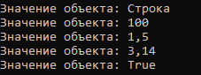

Класс object как универсальный тип данных
object[] obj = new object[5];
obj[0] = "Строка";
obj[1] = 100;
obj[2] = 1.5;
obj[3] = 3.14f;
obj[4] = true;
foreach(var value in obj)
{
Console.WriteLine("Значение объекта: " + value);
}
В результате:

Created with the Personal Edition of HelpNDoc: Qt Help documentation made easy